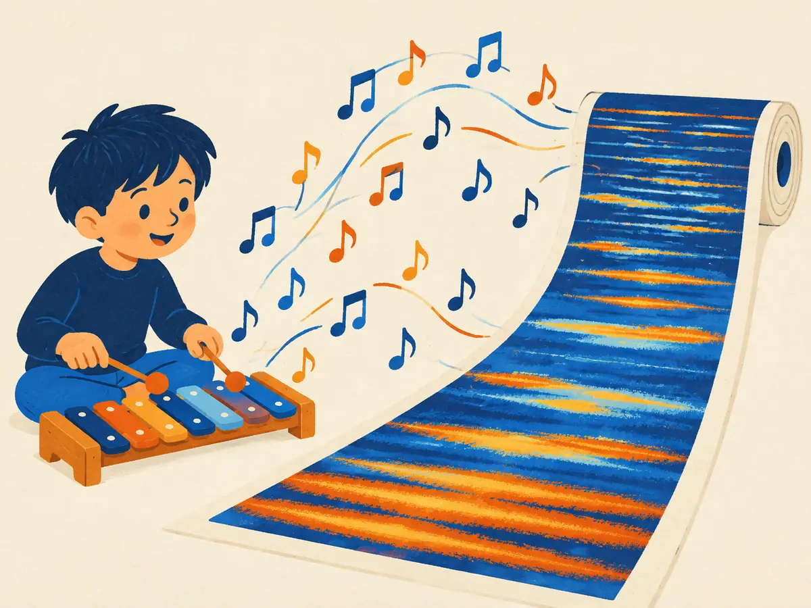

Frequencies & spectrograms
A microphone hands a computer 16,000 numbers per second. Speech models rarely look at those numbers directly. They look at a picture of which frequencies are present, moment by moment: a spectrogram. This lesson builds that picture from scratch, from a single sine wave to the log-mel spectrogram that Whisper reads.
By the end you can
- Describe a sinusoid by amplitude, frequency and phase, and explain sampling rate, the Nyquist frequency and aliasing.
- Explain what a Fourier transform and a short-time Fourier transform (window, hop) produce.
- Explain how a log-mel spectrogram is built, and why audio models use spectrograms or learned codec tokens.
Take your best guess. Being wrong now helps the right answer stick later.
CD audio stores 44,100 samples per second. What is the highest frequency it can represent?
- 44,100 Hz
- 22,050 Hz
- 11,025 Hz
- There's no limit; more samples just mean better quality
In a spectrogram of someone speaking, what do the axes and colour show?
- Horizontal: frequency; vertical: loudness; colour: time
- Horizontal: time; vertical: air pressure; colour: pitch
- Horizontal: word number; vertical: volume; colour: speaker
- Horizontal: time; vertical: frequency; colour: how much energy there is at that frequency and time
Sound is a wave of numbers
In 1807 Joseph Fourier, studying how heat spreads through metal, claimed that almost any function can be written as a sum of sine waves. The idea was contested for years (his 1807 memoir was only published, in expanded form, as a book in 1822) and is now everywhere: in JPEG and MP3 compression, in radio, and in every speech model's front end.
The building block is the sinusoid:
$$x(t) = A \sin(2\pi f t + \varphi)$$$A$ is the amplitude (how loud), $f$ the frequency in hertz, cycles per second (the pitch: concert A is 440 Hz, and human hearing spans roughly 20 Hz to 20 kHz), $t$ is time in seconds, and $\varphi$ the phase, which shifts the wave sideways without changing its pitch.
A microphone turns air pressure into a voltage, and a converter samples it $f_s$ times per second. Common rates: 8 kHz for telephone audio, 16 kHz for most speech models, 44.1 kHz for CDs and 48 kHz for video. The catch was spelled out by Harry Nyquist (1928) and proved in general by Claude Shannon (1949): a sampled signal can only represent frequencies below $f_s / 2$, the Nyquist frequency. At 16 kHz that's 8 kHz, which keeps most of what makes speech intelligible; at 44.1 kHz it's 22.05 kHz, covering human hearing.
A tone above the Nyquist frequency doesn't vanish; it masquerades as a lower one, $|f - k f_s|$ for whole numbers $k$. That's aliasing, the same effect that makes wagon wheels seem to spin backwards on film. Real converters put a low-pass filter before the sampler to remove anything above $f_s/2$ first.
A 7 kHz tone is sampled at 10 kHz. Where does it appear?
- At 7 kHz; it's below the sampling rate
- At 17 kHz
- At 3 kHz
- It disappears completely
Fourier: every sound is a sum of sines
The discrete Fourier transform (DFT) takes $N$ samples and finds the sinusoids they're made of:
$$X[k] = \sum_{n=0}^{N-1} x[n]\; e^{-2\pi i\, k n / N}, \qquad k = 0, 1, \dots, N/2$$It looks exotic, but $e^{-i\theta} = \cos\theta - i\sin\theta$, so $X[k]$ is just two dot products (P1.1): the signal against a cosine and against a sine that each complete $k$ cycles in the window. If the signal contains that frequency, the products line up and the sum is large; otherwise they cancel. It's the same multiply-and-add as a convolution kernel (P5.4), with sinusoids as the kernels.
- Bin $k$ corresponds to frequency $k \cdot f_s / N$. The bins are $f_s / N$ apart and run from 0 up to the Nyquist frequency: $N/2 + 1$ of them.
- The magnitude $|X[k]|$ says how much of that frequency there is; its angle is the phase. A spectrum plot usually shows magnitude only, so phase is thrown away.
- Computed naively it costs $N^2$ operations; the fast Fourier transform (Cooley & Tukey, 1965) does it in about $N \log N$.
Playground: mix three tones
One second sampled at $f_s = 40$ Hz, so the spectrum runs from 0 to the Nyquist frequency, 20 Hz. Try a tone above 20 Hz and watch where its bar lands.
The waveform of three tones looks like a mess, yet the spectrum shows exactly three bars at the right heights: the Fourier transform un-mixes them. The 27 Hz preset shows aliasing in action, with a bar at $40 - 27 = 13$ Hz.
Worked example
A speech model takes windows of $N = 400$ samples at $f_s = 16$ kHz:
- Window length: $400 / 16{,}000 = 0.025$ s, or 25 ms.
- Bin spacing: $f_s / N = 16{,}000 / 400 = 40$ Hz.
- Number of bins: $N/2 + 1 = 201$, covering 0 to 8,000 Hz.
You take the DFT of 1,000 samples recorded at 8 kHz. How far apart are the frequency bins?
- 8 Hz
- 1,000 Hz
- 4 Hz
- 0.125 Hz
Short-time Fourier transform: the spectrogram
One Fourier transform of a whole 10-second clip tells you which frequencies occur, but not when. Speech sounds change every few tens of milliseconds, so we need the frequencies moment by moment. In the 1940s Bell Labs engineers built a machine for exactly this, the sound spectrograph (Koenig, Dunn & Lacy, 1946), and it became the standard tool of phonetics.
The short-time Fourier transform (STFT) does it digitally:
- Cut out a short window of samples, typically 25 ms for speech.
- Multiply it by a taper such as the Hann window, which fades the edges to zero so the abrupt cut doesn't smear energy across frequencies.
- Take its DFT and keep the magnitudes (or their squares, the power): one column.
- Slide along by the hop, typically 10 ms, and repeat. With a hop shorter than the window, neighbouring windows overlap.
Stack the columns side by side and you have a spectrogram. With a 10 ms hop there are 100 columns per second.
Window length is a trade-off. A longer window gives finer frequency bins ($f_s / N$ shrinks), but each column then blurs together everything that happened during the window. A shorter window pins down timing but smears frequency. 25 ms is a compromise that suits speech.
Explain like I'm 5

A child plays a toy xylophone next to a long roll of paper that keeps unrolling. Every note they hit floats out and lands on the paper as a stripe: low notes near the bottom, high notes near the top. Loud notes make dark stripes; soft notes make pale ones.
Later you can "read" the tune from the paper: which notes, in what order, and which ones were played together. That paper is a spectrogram.
Where it breaks: a real sound isn't one clean note; even a single xylophone bar rings at several frequencies at once, and a voice makes dozens. The spectrogram shows all of them, not just the note you meant to play.
Your turn (faded example)
Whisper-style settings: 16 kHz audio, 25 ms window, 10 ms hop, a 30-second clip.
- Samples per window:
- Samples per hop:
- Frames (columns) in 30 seconds:
You switch the STFT window from 25 ms to 100 ms. What happens?
- Finer timing and coarser frequency bins
- Finer frequency bins, but quick changes in time get blurred together
- Both time and frequency get sharper
- Nothing; the window length only affects speed
Mel scale and log-mel spectrograms
Raw spectrograms waste effort on detail people can't hear. Two adjustments, both modelled on human perception, give the standard input to speech models.
The mel scale. We hear the step from 100 to 200 Hz as a big change in pitch, but 8,000 to 8,100 Hz as almost none. Stevens, Volkmann & Newman (1937) measured perceived pitch and defined the mel scale; the formula most software uses is
$$m = 2595 \log_{10}\!\left(1 + \frac{f}{700}\right)$$It's roughly linear below 1 kHz (1,000 Hz ≈ 1,000 mel) and logarithmic above: 4 kHz is about 2,146 mel and 8 kHz about 2,840, so the whole top half of a 16 kHz recording, 4 to 8 kHz, gets only about a quarter of the mel range. A mel filterbank of triangular filters, evenly spaced in mel, pools the 201 linear bins into a few dozen bands: narrow at low frequencies, wide at high ones.
The log. Perceived loudness also grows roughly with the logarithm of power, and speech energy spans a huge range. Taking the log (decibels) compresses it, so quiet consonants and overtones aren't drowned out by loud vowels.
The result, a log-mel spectrogram, is what Whisper (Radford et al., 2022) reads: 16 kHz audio, 25 ms windows, a 10 ms hop and 80 mel bands (128 in the large-v3 model), in 30-second chunks of 3,000 frames. That's 8,000 numbers per second instead of 16,000 raw samples, arranged like an image, ready for convolutions (P5.4) and a transformer (A1.2).
Spectrograms or tokens? A magnitude spectrogram throws phase away, so you can't play it back directly. Text-to-speech systems such as Tacotron 2 (Shen et al., 2018) predict a mel spectrogram and hand it to a separate neural vocoder, like HiFi-GAN (Kong et al., 2020), to rebuild the waveform. Many newer generative audio models skip spectrograms and use neural audio codecs instead, such as SoundStream (Zeghidour et al., 2021) and EnCodec (Défossez et al., 2022). These are learned stacks of strided convolutions that turn audio into a short sequence of discrete tokens (EnCodec's 24 kHz model produces 75 frames per second, each a small stack of codebook tokens) and decode tokens back into sound. A language model can then generate audio token by token (A1.3, A1.4, A1.5).
Why do speech models use mel bands rather than equally spaced frequency bins?
- Mel bands remove the need for a Fourier transform
- Mel bands keep the phase, which linear bins discard
- Mel bands are evenly spaced in hertz, which is simpler
- They give fine resolution at low frequencies, where pitch differences matter most to listeners, and fewer, wider bands at high frequencies
Describe how a log-mel spectrogram is made from a waveform, step by step.
Speech is recorded at 16 kHz. What is the highest frequency the recording can contain?
- 8 kHz
- 16 kHz
- 32 kHz
- 20 kHz, the limit of human hearing
In the playground ($f_s = 40$ Hz), you set a tone to 30 Hz. Where does its bar appear?
- At 30 Hz
- Nowhere; it's filtered out
- At 10 Hz
- At 20 Hz, the Nyquist frequency
Why do many text-to-speech systems that predict mel spectrograms need a separate vocoder?
- Because mel spectrograms are too large to store
- Because a magnitude spectrogram discards phase (and pools frequencies), so the waveform must be reconstructed
- Because spectrograms can only represent speech, not music
- Because the vocoder adds the mel scale
(From P5.4) Which description of one STFT column is most accurate?
- A single convolution with a learned 3-wide kernel
- The average of the samples in the window
- A max-pooling of the waveform
- A set of dot products between the windowed samples and sinusoids of different frequencies, one per frequency bin
Key takeaways
- A sinusoid $A\sin(2\pi f t + \varphi)$ has an amplitude, a frequency and a phase.
- Sampling at $f_s$ captures frequencies below $f_s/2$ (Nyquist); higher ones alias to lower ones. 16 kHz for speech, 44.1 kHz for music.
- The Fourier transform writes a window of samples as a sum of sinusoids; bins are $f_s/N$ apart.
- The STFT repeats it on short overlapping windows (25 ms, hop 10 ms) to make a spectrogram.
- Log-mel spectrograms (e.g. Whisper's 80 bands) mimic hearing; generative audio often uses codec tokens instead, because spectrograms drop phase.
Adding cards schedules your first spaced review.